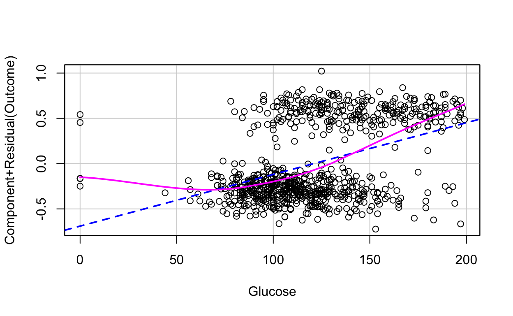
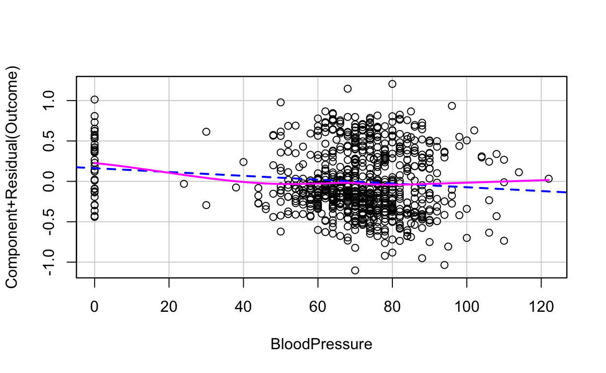
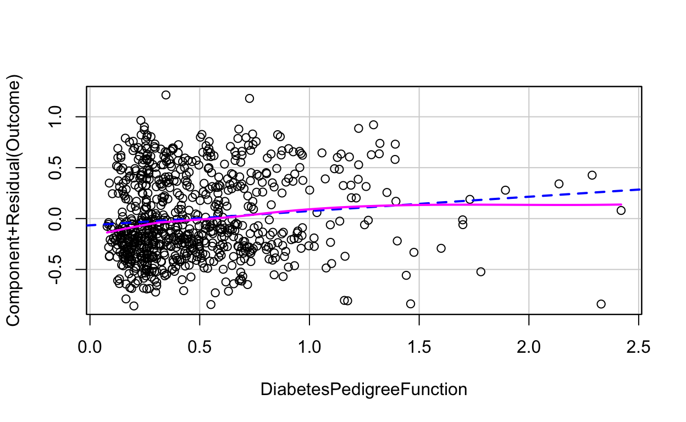

Statistical Analysis
library(dplyr)
library(MASS)
library(leaps)
library(bestglm)
library(mgcv)
library(modelr)
library(purrr)
library(ggplot2)
library(tidyverse)
library(caret)
library(kableExtra)
library(pROC)
library(gridExtra)
library(car)
library(broom)diabetes <- read.csv("diabetes.csv")Full Model
fullmodel <- glm(Outcome ~. ,data = diabetes)
summary(fullmodel)Model Selection
Stepwise regression
The reason we use AIC is because Bayesian information criterion (BIC) usually results in more parsimonious model than the Akaike information criterion.
stepmodel <- stepAIC(fullmodel,trace = F)
stepmodel$anova## Stepwise Model Path
## Analysis of Deviance Table
##
## Initial Model:
## Outcome ~ Pregnancies + Glucose + BloodPressure + SkinThickness +
## Insulin + BMI + DiabetesPedigreeFunction + Age
##
## Final Model:
## Outcome ~ Pregnancies + Glucose + BloodPressure + BMI + DiabetesPedigreeFunction +
## Age
##
##
## Step Df Deviance Resid. Df Resid. Dev AIC
## 1 759 121.5678 783.8218
## 2 - SkinThickness 1 0.00309149 760 121.5709 781.8413
## 3 - Insulin 1 0.25258410 761 121.8235 781.4353summary(stepmodel)##
## Call:
## glm(formula = Outcome ~ Pregnancies + Glucose + BloodPressure +
## BMI + DiabetesPedigreeFunction + Age, data = diabetes)
##
## Deviance Residuals:
## Min 1Q Median 3Q Max
## -1.10046 -0.29833 -0.09648 0.31272 1.23210
##
## Coefficients:
## Estimate Std. Error t value Pr(>|t|)
## (Intercept) -0.8362991 0.0843169 -9.919 < 2e-16 ***
## Pregnancies 0.0209264 0.0051218 4.086 4.86e-05 ***
## Glucose 0.0057091 0.0004832 11.815 < 2e-16 ***
## BloodPressure -0.0023572 0.0008018 -2.940 0.00338 **
## BMI 0.0130807 0.0019634 6.662 5.17e-11 ***
## DiabetesPedigreeFunction 0.1403017 0.0443929 3.160 0.00164 **
## Age 0.0027917 0.0015323 1.822 0.06886 .
## ---
## Signif. codes: 0 '***' 0.001 '**' 0.01 '*' 0.05 '.' 0.1 ' ' 1
##
## (Dispersion parameter for gaussian family taken to be 0.1600834)
##
## Null deviance: 174.48 on 767 degrees of freedom
## Residual deviance: 121.82 on 761 degrees of freedom
## AIC: 781.44
##
## Number of Fisher Scoring iterations: 2Best subset regression
While stepwise regression select variables sequentially, the best subsets approach aims to find out the best fit model from all possible subset models. Best subset regression selects the best model from all possible subsets according to some goodness-of-fit criteria.
subsetmodel <- bestglm(diabetes,IC="AIC",family = binomial)## Morgan-Tatar search since family is non-gaussian.subsetmodel## AIC
## BICq equivalent for q in (0.910337349179387, 0.965036759857444)
## Best Model:
## Estimate Std. Error z value Pr(>|z|)
## (Intercept) -8.405136208 0.7167032628 -11.727498 9.214195e-32
## Pregnancies 0.123172450 0.0320687734 3.840884 1.225919e-04
## Glucose 0.035112252 0.0036624713 9.587038 9.064975e-22
## BloodPressure -0.013213574 0.0051536754 -2.563913 1.034996e-02
## Insulin -0.001157035 0.0008141589 -1.421142 1.552755e-01
## BMI 0.090088589 0.0144619078 6.229371 4.683116e-10
## DiabetesPedigreeFunction 0.947595358 0.2980062755 3.179783 1.473853e-03
## Age 0.014788838 0.0092896771 1.591965 1.113926e-01subsetmodel<-glm(Outcome ~ Pregnancies + Glucose + BloodPressure + BMI + DiabetesPedigreeFunction + Age+Insulin,data=diabetes)
summary(subsetmodel)##
## Call:
## glm(formula = Outcome ~ Pregnancies + Glucose + BloodPressure +
## BMI + DiabetesPedigreeFunction + Age + Insulin, data = diabetes)
##
## Deviance Residuals:
## Min 1Q Median 3Q Max
## -1.01707 -0.29614 -0.09656 0.32073 1.24183
##
## Coefficients:
## Estimate Std. Error t value Pr(>|t|)
## (Intercept) -0.8537906 0.0854265 -9.994 < 2e-16 ***
## Pregnancies 0.0205939 0.0051266 4.017 6.48e-05 ***
## Glucose 0.0059092 0.0005086 11.619 < 2e-16 ***
## BloodPressure -0.0023152 0.0008022 -2.886 0.00401 **
## BMI 0.0133382 0.0019733 6.759 2.76e-11 ***
## DiabetesPedigreeFunction 0.1478835 0.0447843 3.302 0.00100 **
## Age 0.0025991 0.0015393 1.688 0.09173 .
## Insulin -0.0001721 0.0001370 -1.257 0.20929
## ---
## Signif. codes: 0 '***' 0.001 '**' 0.01 '*' 0.05 '.' 0.1 ' ' 1
##
## (Dispersion parameter for gaussian family taken to be 0.1599617)
##
## Null deviance: 174.48 on 767 degrees of freedom
## Residual deviance: 121.57 on 760 degrees of freedom
## AIC: 781.84
##
## Number of Fisher Scoring iterations: 2Compare models
Cross validation
The validation set approach consists of randomly splitting the data into two sets: one set is used to train the model and the remaining other set sis used to test the model.
The process works as follow:
- Build (train) the model on the training data set
- Apply the model to the test data set to predict the outcome of new unseen observations
- Quantify the prediction error as the mean squared difference between the observed and the predicted outcome values.
WE split the data set so that 80% is used for training a regression model and 20% is used to evaluate the model performance.
ALL criterions are similar, so we choose the simplest model.(stepmodel)
set.seed(123)
training.samples <- diabetes$Outcome %>%
createDataPartition(p = 0.8, list = FALSE)
train.data <- diabetes[training.samples, ]
test.data <- diabetes[-training.samples, ]full_train <- glm(Outcome ~. ,data = train.data)
predictions <- full_train %>% predict(test.data)
predict.class <- ifelse(predictions < 0.5,0,1)
data.frame( R2 = R2(predictions, test.data$Outcome),
RMSE = RMSE(predictions, test.data$Outcome),
MAE = MAE(predictions, test.data$Outcome))## R2 RMSE MAE
## 1 0.2992287 0.3969386 0.336013mean(predict.class==test.data$Outcome)## [1] 0.7843137step_train <- glm(Outcome ~ Pregnancies + Glucose + BloodPressure +
BMI + DiabetesPedigreeFunction + Age, data = train.data)
predictions <- step_train %>% predict(test.data)
predict.class <- ifelse(predictions < 0.5,0,1)
data.frame( R2 = R2(predictions, test.data$Outcome),
RMSE = RMSE(predictions, test.data$Outcome),
MAE = MAE(predictions, test.data$Outcome))## R2 RMSE MAE
## 1 0.2960177 0.3978375 0.3374428mean(predict.class==test.data$Outcome)## [1] 0.7712418subset_train <- glm(Outcome ~ Pregnancies + Glucose + BloodPressure + BMI + DiabetesPedigreeFunction + Age+Insulin,data=train.data)
predictions <- subset_train %>% predict(test.data)
predict.class <- ifelse(predictions < 0.5,0,1)
data.frame( R2 = R2(predictions, test.data$Outcome),
RMSE = RMSE(predictions, test.data$Outcome),
MAE = MAE(predictions, test.data$Outcome))## R2 RMSE MAE
## 1 0.2993958 0.3968811 0.3360024mean(predict.class==test.data$Outcome)## [1] 0.7843137criterion <- c("AIC", "AUC", "RMSE", "MAE","Prediction Accuracy")
full_val <- c(783.82,0.7135,0.4249,0.3468,0.7451)
step_val <- c(781.44,0.7107,0.4249,0.3467,0.7451)
sub_val <- c(781.84,0.7135,0.4239,0.3461,0.7451)
variable_data <- data.frame(criterion,full_val,step_val,sub_val)
kable(variable_data,caption = "Model Comparison", col.names = c("Criterion","Full Model","Stepwise model","Subset model"))%>% kable_styling(latex_option = c("hold_position"), position = "left")| Criterion | Full Model | Stepwise model | Subset model |
|---|---|---|---|
| AIC | 783.8200 | 781.4400 | 781.8400 |
| AUC | 0.7135 | 0.7107 | 0.7135 |
| RMSE | 0.4249 | 0.4249 | 0.4239 |
| MAE | 0.3468 | 0.3467 | 0.3461 |
| Prediction Accuracy | 0.7451 | 0.7451 | 0.7451 |
Root Mean Squared Error (RMSE): As the name suggests it is the square root of the averaged squared difference between the actual value and the predicted value of the target variable. It gives the average prediction error made by the model, thus decrease the RMSE value to increase the accuracy of the model.
Mean Absolute Error (MAE): This metric gives the absolute difference between the actual values and the values predicted by the model for the target variable. If the value of the outliers does not have much to do with the accuracy of the model, then MAE can be used to evaluate the performance of the model. Its value must be less in order to make better models.
What is ROC and AUC?
An ROC curve (receiver operating characteristic curve) is a graph showing the performance of a classification model at all classification thresholds. In technical terms, the ROC curve is plotted between the True Positive Rate and the False Positive Rate of a model.
AUC stands for “Area under the ROC Curve.” That is, AUC measures the entire two-dimensional area underneath the entire ROC curve. Higher the AUC score, better is the classification of the predicted values. For example, consider a model to predict and classify whether the outcome is ‘Diabetes” or ‘Normal’.So, if the AUC score is high, it indicates that the model is capable of classifying ‘Diabetes” as ’Diabetes” and ‘Normal’ as ‘Normal’ more efficiently.
Why use AUC?
AUC is desirable for the following two reasons:
AUC is scale-invariant. It measures how well predictions are ranked, rather than their absolute values. AUC is classification-threshold-invariant. It measures the quality of the model’s predictions irrespective of what classification threshold is chosen.
predictions <- full_train %>% predict(test.data)
predict.class <- ifelse(predictions < 0.5,0,1)
rocobj1 <- roc(test.data$Outcome, predict.class)## Setting levels: control = 0, case = 1## Setting direction: controls < casesrocobj1##
## Call:
## roc.default(response = test.data$Outcome, predictor = predict.class)
##
## Data: predict.class in 101 controls (test.data$Outcome 0) < 52 cases (test.data$Outcome 1).
## Area under the curve: 0.7293predictions <- step_train %>% predict(test.data)
predict.class <- ifelse(predictions < 0.5,0,1)
rocobj2 <- roc(test.data$Outcome, predict.class)## Setting levels: control = 0, case = 1## Setting direction: controls < casesrocobj2##
## Call:
## roc.default(response = test.data$Outcome, predictor = predict.class)
##
## Data: predict.class in 101 controls (test.data$Outcome 0) < 52 cases (test.data$Outcome 1).
## Area under the curve: 0.7194predictions <- subset_train %>% predict(test.data)
predict.class <- ifelse(predictions < 0.5,0,1)
rocobj3 <- roc(test.data$Outcome, predict.class)## Setting levels: control = 0, case = 1## Setting direction: controls < casesrocobj3##
## Call:
## roc.default(response = test.data$Outcome, predictor = predict.class)
##
## Data: predict.class in 101 controls (test.data$Outcome 0) < 52 cases (test.data$Outcome 1).
## Area under the curve: 0.7293Model interpretation
exp(stepmodel$coefficients)## (Intercept) Pregnancies Glucose
## 0.4333112 1.0211469 1.0057254
## BloodPressure BMI DiabetesPedigreeFunction
## 0.9976456 1.0131667 1.1506209
## Age
## 1.0027956variable_name <- c("Pregnancies", "Glucose", "Blood Pressure", "BMI", "Diabetes Pedigree Function","Age")
val <- c(1.021,1.006,0.998,1.013,1.151,1.003)
p <- c("< 0.05","< 0.05","< 0.05","< 0.05","< 0.05",0.069)
variable_data <- data.frame(variable_name,val,p)
kable(variable_data,caption = "Parameter estimates for the logistic model", col.names = c("Parameters","Exponentiated Coefficients/Odds Ratio","P-values"))%>% kable_styling(latex_option = c("hold_position"), position = "left")| Parameters | Exponentiated Coefficients/Odds Ratio | P-values |
|---|---|---|
| Pregnancies | 1.021 | < 0.05 |
| Glucose | 1.006 | < 0.05 |
| Blood Pressure | 0.998 | < 0.05 |
| BMI | 1.013 | < 0.05 |
| Diabetes Pedigree Function | 1.151 | < 0.05 |
| Age | 1.003 | 0.069 |
Assumptions Check
Assumption 1— Appropriate Outcome Type
By default, logistic regression assumes that the outcome variable is binary, where the number of outcomes is two.
Assumption 2 — Linearity of independent variables and log-odds
p1<-crPlot(stepmodel, "Pregnancies")p2<-crPlot(stepmodel, "Glucose")
p3<-crPlot(stepmodel, "BloodPressure")
p4<-crPlot(stepmodel, "BMI")p5<-crPlot(stepmodel, "DiabetesPedigreeFunction")
p6<-crPlot(stepmodel, "Age")grid.arrange(p1, p2, p3, p4,p5,p6, ncol=3)Assumption 3— No strongly influential outliers
Influential values are extreme individual data points that can alter the quality of the logistic regression model.We can use Cook’s Distance to determine the influence of a data point, and it is calculated based on its residual and leverage. It summarizes the changes in the regression model when that particular (ith) observation is removed.
The most extreme values in the data can be examined by visualizing the Cook’s distance values. Here we label the top 3 largest values:
Note that, not all outliers are influential observations. To check whether the data contains potential influential observations, the standardized residual error can be inspected. Data points with an absolute standardized residuals above 3 represent possible outliers and may deserve closer attention.
plot(stepmodel, which = 4, id.n = 3)
Assumption 4 — Absence of Multicollinearity
Multicollinearity corresponds to a situation where the data contain highly correlated independent variables. This is a problem because it reduces the precision of the estimated coefficients, which weakens the statistical power of the logistic regression model
Variance Inflation Factor (VIF) measures the degree of multicollinearity in a set of independent variables.
Mathematically, it is equal to the ratio of the overall model variance to the variance of a model that includes only that single independent variable.
The smallest possible value for VIF is 1 (i.e., a complete absence of collinearity). As a rule of thumb, a VIF value that exceeds 5 or 10 indicates a problematic amount of multicollinearity.
all_vifs <- car::vif(stepmodel)
print(all_vifs) %>% tidy()%>%
mutate(Variables = names,
VIF = x)%>%
dplyr::select(Variables,VIF)%>%
knitr::kable(digits = 3)## Pregnancies Glucose BloodPressure
## 1.427047 1.143559 1.154015
## BMI DiabetesPedigreeFunction Age
## 1.148072 1.036558 1.555786## Warning: 'tidy.numeric' is deprecated.
## See help("Deprecated")| Variables | VIF |
|---|---|
| Pregnancies | 1.427 |
| Glucose | 1.144 |
| BloodPressure | 1.154 |
| BMI | 1.148 |
| DiabetesPedigreeFunction | 1.037 |
| Age | 1.556 |
Assumption 5— Independence of observations
The observations must be independent of each other, i.e., they should not come from repeated or paired data. This means that each observation is not influenced by or related to the rest of the observations.
This independence assumption is automatically met for our dataset since the data consists of individual records.
We can also check this by creating a Residual Series plot where we plot the deviance residuals of the logit model against the index numbers of the observations.Since the residuals in the plot above appear to be randomly scattered around the centerline of zero, we can infer (visually) that the assumption is satisfied.
model.data <- augment(stepmodel) %>%
mutate(index = 1:n())
ggplot(model.data, aes(index, .std.resid)) +
geom_point(aes(color = factor(Outcome)), alpha = .5) +
theme_bw()+
labs(title="Residual Series Plot",y="Deviance Residuals")Assumption 6 — Sufficiently large sample size
There should be an adequate number of observations for each independent variable in the dataset to avoid creating an overfit model.
A common way to determine a large sample size is that the total number of observations should be greater than 500.